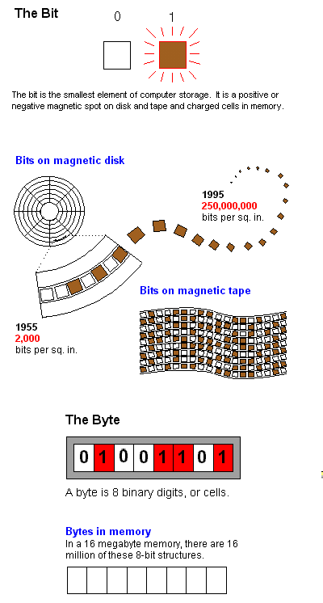
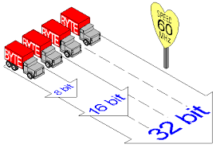

How memory is measured
Bit (BInary digiT) The smallest element of computer storage. It is a single digit in a binary number (0 or 1). The bit is physically a transistor or capacitor in a memory cell, a magnetic domain on disk or tape, a reflective spot on optical media or a high or low voltage pulsing through a circuit.

Groups of bits make up storage units in the computer, called characters, bytes, or words, which are manipulated as a group. The most common is the byte, made up of eight bits and equivalent to one alphanumeric character. Bits are widely used as a measurement for transmission. Ten megabits per second means that ten million pulses are transmitted per second. A 16-bit bus means that there are 16 wires transmitting the bit at the same time. Measurements for storage devices, such as disks, files and databases, are given in bytes rather than bits.
Byte The common unit of computer storage from micro to mainframe. It is made up of eight bits.
A ninth bit may be used in the memory circuits as a parity bit for error checking.
A byte holds the equivalent of a single character, such as the letter A, a dollar sign or decimal point.
For numbers, a byte can hold a single decimal digit (0 to 9), two numeric digits (packed decimal) or a number from
0 to 255 (binary numbers).
Binary - Meaning two. The principle behind digital computers. All input to the computer is converted into binary numbers made up of the two digits 0 and 1 (bits). For example, when you press the "A" key on your personalcomputer, the keyboard generates and transmits the number 01000001 to the computer's memory as a series of pulses. The 1 bits are transmitted as high voltage; the 0 bits are transmitted as low. The bits are stored as charged and uncharged memory cells in the computer or as microscopic magnets on disk and tape. Display screens and printers convert the binary numbers into visual characters. The electronic circuits that process these binary numbers are also binary in concept. They are made up of on/off switches (transistors) that are electrically opened and closed. The current flowing through one switch turns on (or off) another switch, and so on. These switches open and close in nanoseconds and picoseconds (billionths and trillionths of a second).
A computer's capability to do work is based on its storage capacity (memory and disk) and internal transmission speed. Greater storage capacities are achieved by making the memory cell or magnetic spot smaller. Faster transmission rates are achieved by shortening the time it takes to open and close the switch. In order to increase computer performance, we keep improving binary devices.
Bits/bytes x ^ y = Power of, examp: 2 ^10 = 2 to the power of 10 = 1024
Kilo (K) Thousand 2 ^10 = 1024 bytes ( 4 digit number)
Mega (M) Million 2 ^20 = 1048576 bytes ( 7 digit)
Giga (G) Billion 2 ^ 30 (10 digit)
Tera (T) Trillion 2 ^ 40 (13 digit)
Peta (P) Quadrillion 2 ^ 50 (16 digit)
Exa (E) Quintillion 2 ^ 60 (19 digit)
Zetta (Z) Sextillion 2 ^ 70 (22 digit)
Yotta (Y) Septillion 2 ^ 80 (25 digit)
TIME - Fraction of second Power of 10
Millisecond (ms) Thousandth -3
Microsecond (µs) Millionth -6
Nanosecond (ns) Billionth -9
Picosecond (ps) Trillionth -12
Femtosecond (fs) Quadrillionth -15
Attosecond (as) Quintillionth -18
Zeposecond (zs) Sextillionth -21
Yoctosecond (ys) Septillionth -24
Storage/channel capacity measured in:
CPU word size bits
Bus size bits
Disk, tape bytes
Overall memory capacity bytes
SIMM and DIMM modules bytes
Individual memory chip bits
Transmission speed measured in:
Network line/channel bits/sec
Disk transfer rate bytes/sec
Disk access time ms
Memory access time ns
Machine cycle us, ns
Instruction execution us, ns
Transistor switching ns, ps, fs
MHz
(MegaHertZ) One million cycles per second. It is used to measure the transmission speed
of electronic devices, including channels, buses and the computer's internal clock. Megahertz is generally equivalent
to one million bits per second or to one million times some number of bits per second.
When it refers to the computer's clock, it is used to measure the speed of the CPU. For example, a 133MHz Pentium
processes data internally (calculates, compares, copies) twice as fast as a 66MHz Pentium. However, this does not
mean twice as much finished work gets done in the same time frame, because cache design, disk speed and software
design all contribute to the computer's actual performance, not just CPU speed.
When referencing CPU speed, the megahertz rating is really the heartbeat of the computer, providing the raw, steady pulses that energize the circuits. If you know any German, it's easy to remember this. The word "Herz," pronounced "hayrtz," means heart.

The MegaHertz Speed Limit MegaHertz is analogous to a highway speed limit.
The higher the speed, the faster the traffic moves. In a CPU, the higher the clock rate, the quicker data gets processed.
The 8-, 16- and 32 bit designation is the CPU's word size and can be thought of as the number of lanes on the highway. The more lanes, the more traffic. The combination of speed and number of paths determines the total processing speed or channel bandwidth.